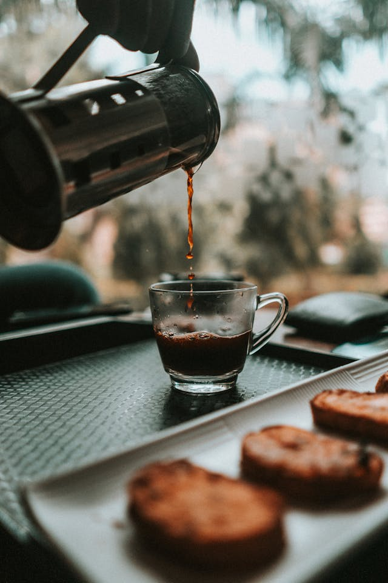

O orvalho ainda veste a roseira,
Um sussurro de vento na mangueira,
E o sol preguiçoso, em tons de aquarela,
Desperta a cidade, tão singela.
Mas antes da pressa, da lida que chama,
Um aroma se eleva, que acalma e inflama.
O café fumegante, néctar escuro e quente,
Promessa de força, em cada semente.
Na xícara morna, a vida se acorda,
Um gole que espanta a sombra que recorda
A noite que finda, os sonhos que voam,
E traz para perto quem a alma adoça e apoia.
No raio de luz que na mesa se estende,
Um olhar se cruza, o amor que se acende.
Um toque suave, um sorriso singelo,
Compartilhando o instante, o aconchego.
Pois nessa alquimia da aurora que irradia,
Café, manhã e amor, em doce melodia,
Nutrem a alma, aquecem o peito,
E dão ao dia um começo perfeito.